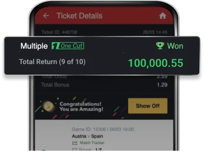
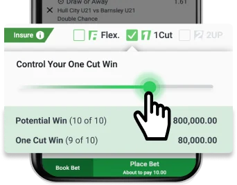

SportyBet One Cut lets you secure a portion of your returns even if one selection loses, ensuring smarter and more rewarding betting.
💰 Win Even If One Selection Loses 💰
Enjoy a payout even if one leg of your multi-bet doesn't come through.

🛠️ Full Customisation 🛠️
Adjust your potential 'To Win' and 'One Cut Win' amounts with an easy-to-use slider, giving you full control of your bet.

🏆 Better Returns 🏆
The One Cut Win amount can be equal to or even greater than your stake, making it a safer and more rewarding betting option.
Step 1: Activate One Cut
Add your preferred outcomes to the betslip and enable the One Cut feature directly from the betslip.
Step 2: Adjust with the Slider
Fine-tune the slider to balance between maximising potential returns and securing a One Cut Win.
Step 3: Confirm Your Bet
Finalise your bet and enjoy added confidence with One Cut!
Try SportyBet One Cut today and experience smarter, more secure betting!
Terms and Conditions
1. One Cut Bets cannot be Cashed out.
2. Gifts cannot be applied on One Cut betslip.
3. Void selections will not be considered as Lost & will be recalculated.
4. The amount mentioned on the One Cut Win field on the betslip at the time of placing the bet is the amount the user will receive if one selection is lost on the betslip.
5. Potential Win is the amount you will receive if all selections are won after selecting the One Cut feature on betslip.
6. Void selections can lead to a recalculation of your return and may result in a lower One Cut Win amount than your stake.